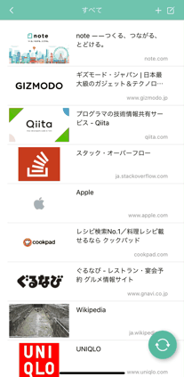
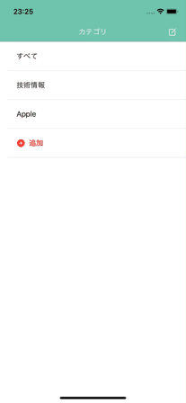

リスト表示とカード表示
ブックマークの表示形式は「リスト表示」と「カード表示」が選択できます。
大きなサムネイル表示で、一目でお気に入りのブックマークが判別できます。

カテゴリごとにブックマークを管理
カテゴリを自由に作成し、そのカテゴリごとにブックマークを管理することができます。
ブックマーク表示順も変更可能で、数が増えても大事なブックマークが埋もれません。

ブックマークの追加は簡単
ブックマークの追加にはまったく手間がかかりません。
SafariやGoogle Chromeなどのブラウザから「共有」で簡単にブックマークを追加することができます。